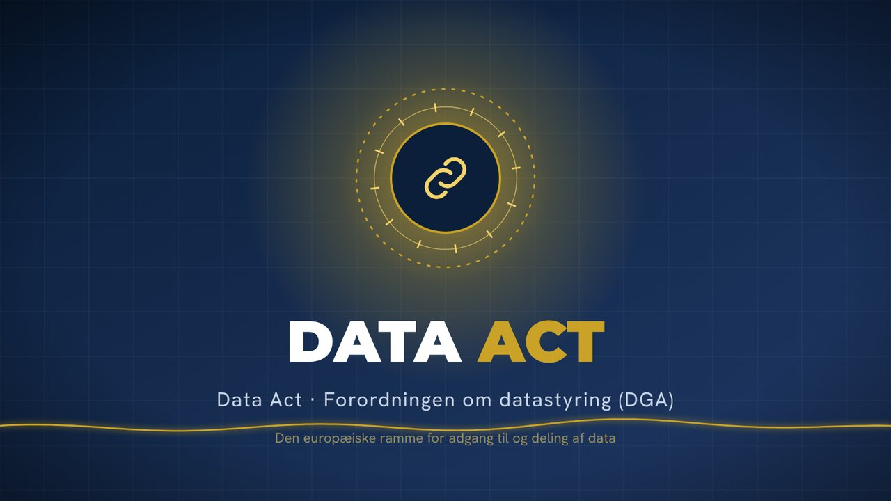

ARG
ARGARGOS › Reglerne på 4 minutter › Data Act og DGA
Data Act og DGA på 4 minutter: Danmark: tilsyn hos myndigheden, bøder ved domstolene
Data Act og forordningen om datastyring udgør den europæiske ramme for adgang til og deling af data. Industrielle data tilhører ikke længere automatisk producenten. I Danmark fører myndigheden tilsyn, og domstolene giver bøderne.

- 0:00Hvem ejer?
- 0:10Forordningen
- 0:28I Danmark
- 0:47Data Act
- 0:59Forpligtelser
- 1:19DGA
- 1:36Datoer
- 1:55Europa
- 2:14Myndigheden
- 2:28Hvad gør man
Det vigtigste
- 12.9.2025 i hele Den Europæiske Union
- 24.9.2023 DGA gælder
- 12.9.2025 Data Act gælder
- 12.9.2026 adgang fra designet
- 12.1.2027 slut med skiftegebyrer i skyen
- Lov nr. 1618 I kraft siden december 2025
- Digitaliserings- styrelsen Tilsynsmyndighed
- Datatilsynet Person- oplysninger
Transskription
Den fulde speaktekst
0:00 · Hvem ejer?
Din traktor laver data. Dine maskiner også. Din elevator, din bil, din måler. Men producenten beholder dem. Hvem ejer dem egentlig?
0:10 · Forordningen
Den europæiske dataforordning, Data Act, gælder i hele Unionen siden 12. september 2025. Den, der bruger et forbundet produkt, får gratis adgang til sine data og kan dele dem. Og fra 12. januar 2027 må ingen cloududbyder tage betaling for at skifte.
0:28 · I Danmark
I Danmark fører myndigheden tilsyn, og domstolene giver bøderne. Loven trådte i kraft i december 2025. Digitaliseringsstyrelsen er tilsynsmyndighed. Datatilsynet tager sig af personoplysninger. Bøder kan kun idømmes af domstolene. Og borgere og virksomheder kan allerede klage.
0:47 · Data Act
Data Act og forordningen om datastyring udgør den europæiske ramme for adgang til og deling af data. Industrielle data tilhører ikke længere automatisk producenten.
0:59 · Forpligtelser
Hvad den kræver af producenten. Design produktet, så brugeren kan få adgang til sine data. Informér før kontrakten om, hvilke data der dannes. Del med den tredjepart, brugeren vælger, på fair vilkår. Og beskyt forretningshemmeligheder med aftalte foranstaltninger. Ikke-personlige data kun som aftalt med brugeren.
1:19 · DGA
Forordningen om datastyring fuldender billedet. Genbrug af beskyttede offentlige data. Neutrale, registrerede dataformidlere. Og dataaltruisme, til almenvellet. Den digitale omnibus foreslår at lægge den ind i Data Act.
1:36 · Datoer
Datoerne. 24. september 2023: forordningen om datastyring gælder. 12. september 2025: Data Act gælder. 12. september 2026: adgang fra designet. Og 12. januar 2027: slut med skiftegebyrer i skyen.
1:55 · Europa
I Europa er kortet ujævnt. Tyskland: over 700 klager. Nederlandene: lov og myndighed. Danmark: bøder kun ved domstolene. Frankrig: skift fra skyen for nul euro. Belgien forbereder sin myndighed. Og Spanien, Portugal og Italien er stadig uden myndighed.
2:14 · Myndigheden
I Danmark er Digitaliseringsstyrelsen tilsynsmyndighed for Data Act. Den kan påbyde og vejlede. Bøderne afgøres ved domstolene. Og man kan klage, hvis man for eksempel ikke får adgang til data fra sit smart-tv eller sin bil.
2:28 · Hvad gør man
Hvad gør man nu. Datablade pr. produkt, en procedure for adgangsanmodninger, fair kontrakter og en exitplan for skyen. ARGOS tjekker, om adgangen virkelig fungerer, med tests på de rigtige systemer og bevis til kunden eller dommeren. Data Act: data i tjeneste for dem, der skaber dem.
Ofte stillede spørgsmål
Hvad er Data Act og DGA?
Data Act og forordningen om datastyring udgør den europæiske ramme for adgang til og deling af data. Industrielle data tilhører ikke længere automatisk producenten. Den europæiske dataforordning, Data Act, gælder i hele Unionen siden 12. september 2025. Den, der bruger et forbundet produkt, får gratis adgang til sine data og kan dele dem. Og fra 12. januar 2027 må ingen cloududbyder tage betaling for at skifte.
Hvad kræver Data Act og DGA?
Hvad den kræver af producenten. Design produktet, så brugeren kan få adgang til sine data. Informér før kontrakten om, hvilke data der dannes. Del med den tredjepart, brugeren vælger, på fair vilkår. Og beskyt forretningshemmeligheder med aftalte foranstaltninger. Ikke-personlige data kun som aftalt med brugeren.
Hvilke datoer er vigtige?
Datoerne. 24. september 2023: forordningen om datastyring gælder. 12. september 2025: Data Act gælder. 12. september 2026: adgang fra designet. Og 12. januar 2027: slut med skiftegebyrer i skyen.
Hvad gælder i Danmark?
I Danmark fører myndigheden tilsyn, og domstolene giver bøderne. Loven trådte i kraft i december 2025. Digitaliseringsstyrelsen er tilsynsmyndighed. Datatilsynet tager sig af personoplysninger. Bøder kan kun idømmes af domstolene. Og borgere og virksomheder kan allerede klage. I Danmark er Digitaliseringsstyrelsen tilsynsmyndighed for Data Act. Den kan påbyde og vejlede. Bøderne afgøres ved domstolene. Og man kan klage, hvis man for eksempel ikke får adgang til data fra sit smart-tv eller sin bil.
Hvad bør en virksomhed gøre nu?
Hvad gør man nu. Datablade pr. produkt, en procedure for adgangsanmodninger, fair kontrakter og en exitplan for skyen. ARGOS tjekker, om adgangen virkelig fungerer, med tests på de rigtige systemer og bevis til kunden eller dommeren. Data Act: data i tjeneste for dem, der skaber dem.
Officielle kilder
- Forordning (EU) 2023/2854 (Data Act) (EUR-Lex)
- Forordning (EU) 2022/868 (DGA) (EUR-Lex)
- Software in a Box’ regulatoriske faktaark
Se også
 ISO for staten
ISO for statenISO for staten på 4 minutter: Bevis er ikke en formular
 GDPR
GDPRGDPR på 4 minutter: Der gives oftest bøder for det grundlæggende
 EHDS
EHDSEHDS på 4 minutter: For hospitaler og producenter
Speak og musik er genereret med kunstig intelligens (art. 50 i AI-forordningen). Generel information, ikke juridisk rådgivning; status november 2026, ifølge Software in a Box’ regulatoriske faktaark. Videoklip under licens fra Envato.
Sådan indlejrer du præsentationen på en anden hjemmeside: <iframe src="https://argos.softwareinabox.eu/da/regler/data-act-dga/presentacion/?embed=1" width="960" height="540" allow="autoplay; fullscreen" title="Data Act og DGA på 4 minutter: Danmark: tilsyn hos myndigheden, bøder ved domstolene"></iframe> med et link til denne side.
Findes også på: EspañolDeutschFrançaisFrançais (Belgique)ItalianoNederlandsNederlands (België)Português